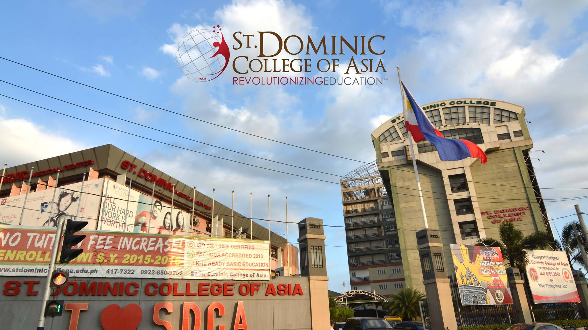

We are in Home page.
What is St. Dominic College of Asia?
St. Dominic College of Asia also referred to by its acronym SDCA is a private coeducational basic and higher education institution in Bacoor, Cavite, Philippines. It was founded by Don Gregorio and Doña Dominga Andaman in 2003 and initially named St. Dominic College of Arts & Sciences.
Mission
To revolutionize education by purposively linking quality education, training, and research with community service in pursuing the holistic development of individuals through innovative programs and productive activities attuned to local and global demands.
Vision
A dynamic and proactive university in Asia dedicated to excellence in providing learner-centered education, research, and sustainable community service towards the attainment of a better quality of life.
Core Values
St.Dominic College of Asia performs its various roles toward the achievement of its Vision-Mission-Goals as it anchors itself on a four-point set of core values:
- Service
- Dynamism
- Competence
- Accountability